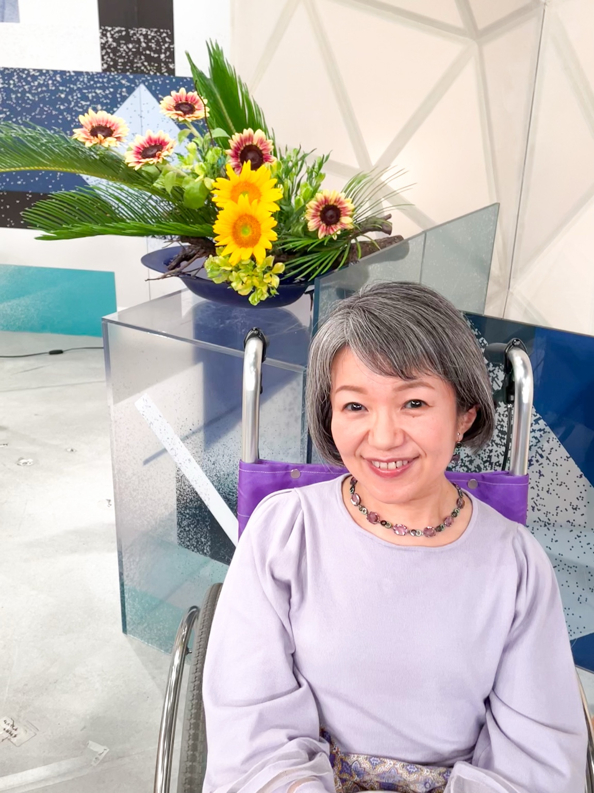

短歌を読み込んでいます…
横山未来子 公式ウェブサイト
自選短歌
PROFILE
プロフィール

横山未来子 / YOKOYAMA Mikiko
1972年東京都生まれ。歌人、歌誌「心の花」選者。2023年より短歌研究新人賞選考委員。2025年度、2026年度 Eテレ「NHK短歌」選者。
1994年「心の花」入会。1996年、第39回短歌研究新人賞受賞。2008年、歌集『花の線画』により第4回葛原妙子賞受賞。2021年、歌集『とく来りませ』により第8回佐藤佐太郎短歌賞受賞。
WORKS
歌集・著書
著作情報を読み込んでいます…
FOR NEW READERS
はじめての方へ
『NHK短歌』から来た方へ
番組をきっかけに横山未来子を知った方が、まず一首と出会い、そこからプロフィールや歌集へ自然に進める入口として構成しています。
短歌に詳しくない方へ
難しい説明を先に置かず、短歌そのものに静かに向き合える導線を優先しています。学校関係者、講演依頼を検討される方にも届く設計です。
NEWS
お知らせ
公式サイト確認版を更新しました
自選短歌のファーストビュー構成、プロフィール、著作情報を整理した確認版です。
『NHK短歌』関連導線を反映予定です
番組を入口として作品や歌集へ進みやすい導線を整備しています。
CONTACT
お問い合わせ
マネージメント窓口
office@example.jp
学校・講演関連
school@example.jp
外部リンク
出版社ページ、番組関連ページ等は後で整理して掲載予定です。